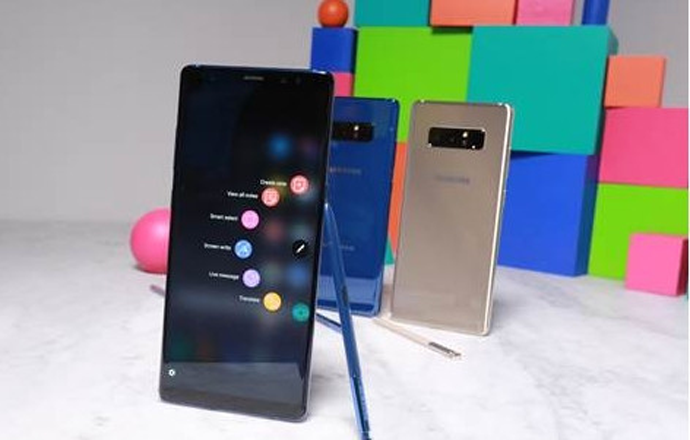

董小姐
福建省福州市平潭县坛东大道 8月15日 12:55
一手资金业务没有人怀疑三星手机的设计与制造能 力，拥有超强产业链控制能力的三星在智能手机领 域已经领跑了很多年。当然，三星也需要再进一步， 那就是，要超越苹果，不仅仅是在销量上，也要在 质量和口碑上。
本来，去年的NOTE 7 被寄予厚望，如果不是电池不 给力，NOTE 7完全有可能实现三星的梦想，也正是 因为看到了机会，三星在制造工艺上出现了瑕疵以 至于让经典手机落得被召回的命运。

15 15 15
有客厅吗
回复张三：你要看房子吗？
麻子，你那儿有按摩椅没有？
回复张三：你要看房子吗？
回复张三：你要看房子吗？